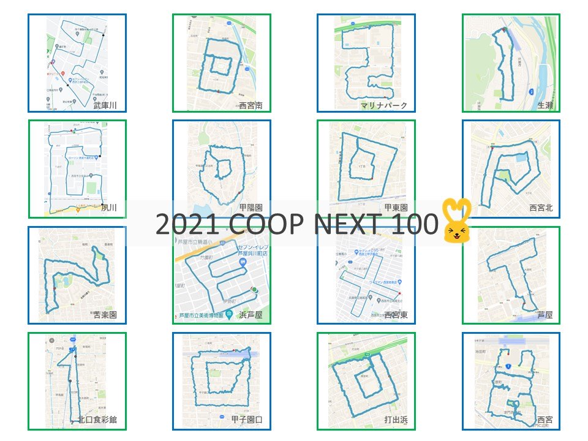

GPS RUNNER
CASE STUDY ｜ 企業コラボ
コープこうべ創設100周年を記念し、西宮市・芦屋市のコープ16店舗で同時にGPSプロギング（ゴミ拾い×アートウォーク）を開催しました。
OVERVIEW
生活協同組合コープこうべの創設100周年記念事業として実施した、GPSアートを活用したSDGsイベントです。 西宮市と芦屋市のコープ16店舗を舞台に、各店舗で参加者がゴミを拾いながらまちを歩く 「GPSプロギング」を同時開催しました。
各店舗で描いた1文字ずつをつなぎ合わせることで、16文字の連結アート 「2021 COOP NEXT 100」が完成。 約250名の地域の方々が参加し、環境美化・健康づくり・地域コミュニティづくりを 一つの体験として楽しめるプログラムになりました。

16店舗の文字をつないで完成した連結アート「2021 COOP NEXT 100」
RELATED
周年記念事業・SDGs施策・地域貢献イベントなど、目的に合わせてGPSアートを企画・実施します。実績・事例も多数。